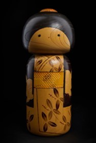

Hōga (Chồi non) là tác phẩm thuộc dòng Kindai Kokeshi Ningyō – búp bê Kokeshi hiện đại, được phát triển từ nghệ thuật Kokeshi truyền thống của vùng Đông Bắc Nhật Bản. Khác với Kokeshi cổ điển, Kokeshi hiện đại đề cao tính sáng tạo trong hình khối, màu sắc và họa tiết, đồng thời vẫn giữ được vẻ đẹp mộc mạc của chất liệu gỗ.
Tác phẩm được tiện từ gỗ nguyên khối với hình dáng đơn giản, bề mặt kết hợp giữa màu gỗ tự nhiên và sắc đen, nổi bật bởi những họa tiết lá non được vẽ tinh tế. Thiết kế tối giản giúp tôn lên vẻ đẹp của chất liệu và kỹ thuật thủ công, đồng thời phản ánh tinh thần thẩm mỹ đặc trưng của nghệ thuật Nhật Bản.
Trong văn hóa Nhật Bản, chồi non là biểu tượng của sự sống, hy vọng và những khởi đầu mới. Thông qua hình ảnh giản dị nhưng giàu ý nghĩa này, Hōga gửi gắm thông điệp về sự phát triển không ngừng, tinh thần đổi mới và niềm tin vào tương lai. Tác phẩm là sự kết hợp hài hòa giữa truyền thống Kokeshi và tư duy nghệ thuật đương đại, góp phần làm phong phú thêm di sản thủ công của Nhật Bản.
萌芽は近代こけし人形の作品で、東北地方の伝統こけしから発展したものです。古典的なこけしと異なり、近代こけしは形・色・文様に作り手の創造性を重んじながら、木という素材の素朴な美しさを大切にしています。
本作は一本の木から挽き出されたシンプルな形で、自然の木肌と黒を組み合わせた表面に、繊細に描かれた若葉の文様が映えます。ミニマルなデザインが素材の美しさと手仕事の技を引き立て、日本美術ならではの美意識を映し出しています。
日本文化において新芽は、生命・希望・新たな始まりの象徴です。素朴ながら意味深いこのモチーフを通して、萌芽は絶え間ない成長、革新の精神、そして未来への信頼というメッセージを伝えています。伝統こけしと現代の芸術感覚が調和した本作は、日本の手工芸の遺産をさらに豊かなものにしています。